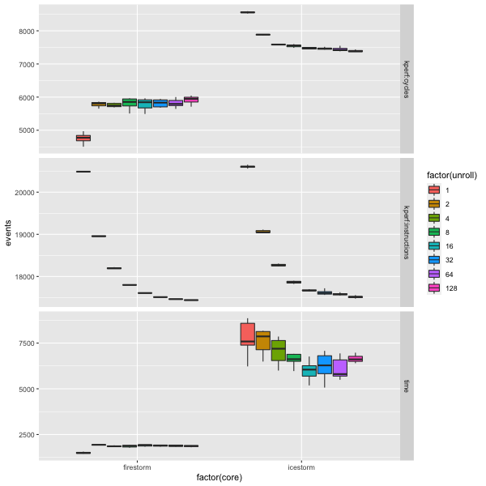

Apple M1: Firestorm and Icestorm difference
Apple M1 processor has 4 Firestorm (performance) cores and 4 Icestorm (efficiency) cores. While official details are scarce, Firestorm and Icestorm by Dougall Johnson provide a great overview of the microarchitecture. There are many differences between the two types of cores: execution ports, cache size, etc. This heterogeneity implies: when the compiler or programmer tries to optimize for M1 CPU, the best code generated for Icestorm and Firestorm cores could often be different.
This benchmark is a simple synthetic example of that; it implements pointer chasing in a small buffer with some work done in a loop and measures the impact of unrolling the loop with different factors on Icestorm and Firestorm cores.

The way to read this chart: we measure 3 events: time, cycles and instructions per one list traversal. Results are collected for each core type and several unroll factors.
As unroll gets more extreme, we see less instructions, as expected. Time and cycles, however, have a different trend for each core type: for Icestorm, we get improvements as we get more extreme, but Firestorm performs the best without the unrolling.
This is an illustration of the idea that in some of the cases when the same code needs to run on all 8 cores of the M1 CPU, it might make sense to have a specialized (potentially just differently compiled) implementation for Firestorm and Icestorm to utilize each core type better.
How the cycles and instructions are measured?
From Daniel Lemire's blog I've learned that there is a not-very-documented API for getting the PMU counters on OS X. I've added these counters to b63 benchmarking tool and used it to measure instructions and cycles.